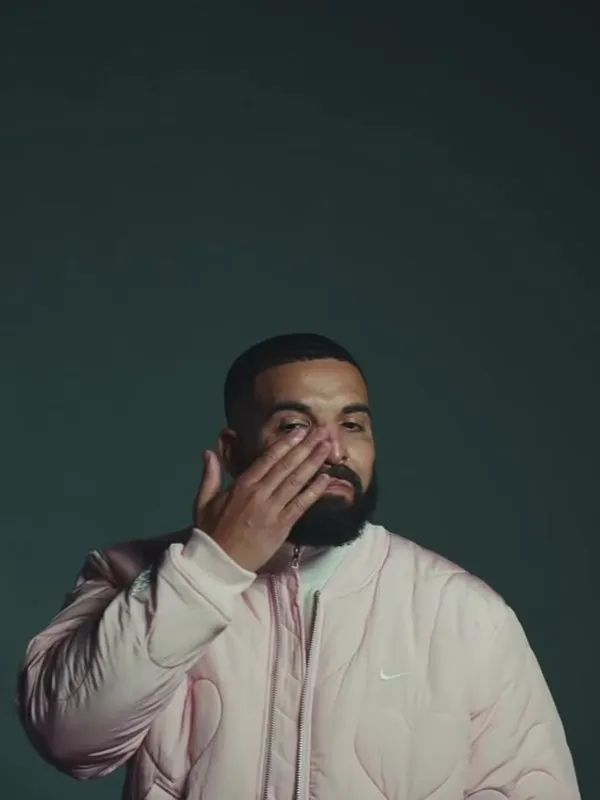

About Us
At "Defeat Street Therapy", we specialize in help reconciling emotionally damaged rappers who have experienced heartbreaking and embarrasing losses to other artists in the competitive sport of rap. We believe in the importance of helping indivuals regain what little of their confidence they have left.
Our Team
Our experienced therapists understand the challenges of the rap industry and provide personalized care. Please contact us and provide us details about your self so we can match you with the best suited theraptist.
Testimonials
Drake
"Defeat Street Therapy has been pretty substantial for me in my recovery process. After what Pusha T did to me in 2018, I had constant nightmares about him and the whole situation to be honest. For him to absolutely EMASCULATE me in front of the whole world and make me raise a child that I didn't want, was tramautizing. I came to Defeat Street Therapy a short while after, and they immediately started helping me. There was a major hurdle I had to overcome in May 2024, where Kendrick Lamar continously attacked me and exposed me. That sent me to a dark place, but Defeat Street helped me get back on my feet. Outside my ghostwriters and the folks that helped me become an industry plant, I would say Defeat Street has had the most impact on my life."
Drake recovered, but is now currently serving 10 consecutive life sentences in Guatanamo Bay for being a weird with the kids
Lil Wayne

"I am also a victim of Pusha T. He sent me to a very dark place. I came to Defeat Street Therapy and they completely turned my life around. The various programs and willing to work with me is what helped for the better. "